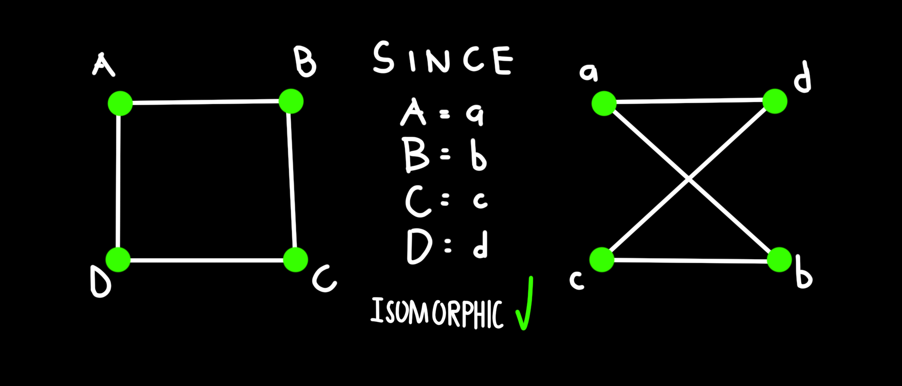

Scroll Down
Graph representation involves using mathematical structures like adjacency matrices and lists to depict relationships between objects. These methods help us visualize and analyze how different elements are connected.
Adjacency Matrix - A matrix where the cell at row i and column j indicates the presence of an edge between the vertices i and j.
Incidence Matrix - A matrix where it records the presence of a vertex on each specific edge.
Graph isomorphism checks if two graphs are structurally identical despite having different labels or arrangements. This means it can determine if two seemingly different graphs actually have the same underlying structure. Graphs' number of vertices, edges, degree must be equal to be considered isomorphic.

Understanding graph representation and isomorphism helps recognize similarities and differences in complex structures, exploring the essence of connectivity.
Applications:
Graph representation and isomorphism provide powerful tools for modeling and analyzing complex systems in various real-life scenarios. They help in visualizing relationships, optimizing processes, and identifying patterns, making them essential in fields ranging from social network analysis to molecular biology and beyond.